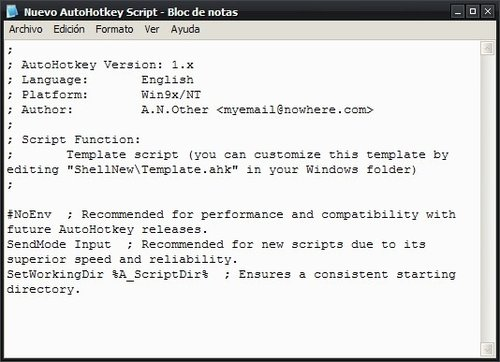
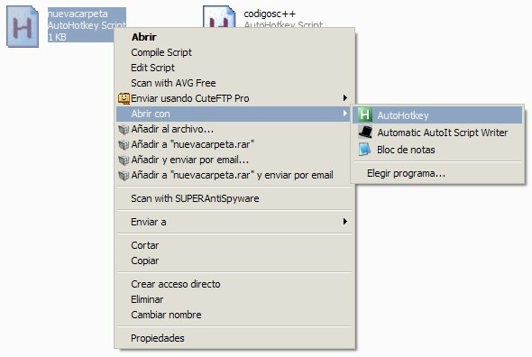

AutoHotkey: Nueva Carpeta
Uso Windows. Qué se extraña de otros Sistemas Operativos? Keyboard Shortcuts (Atajos de teclado / Comandos, Ctrl + C…) para una nueva carpeta. Sé que se puede apretando: AppMenu (ese que funciona como el botón derecho) arriba x2 > enter/derecha > enter. O desde el menu de arriba en una carpeta: alt > enter/abajo > enter/derecha > abajo. Pero es mucho lio, asique pienso yo que con dos teclitas se soluciona parte del problema.
El programa a descargar es Autohotkey (Es gratuito, OpenSource y para Windows). Dos versiones: exe y zip. Si queres crear scripts rápidos, optá por el exe. Si no te interesa/no te molesta la rapidez (solo son un par de pasitos mas, tampoco es mucho) anda con el comprimido.
Una vez que lo instalaste, en una carpetita donde vas a guardar los scripts hacé: boton derecho>crear nuevo AutoHotkey Script. Si bajaste el Zip, creas un archivo de texto con la extensión .ahk.

Te aparece el archivo, le cambias el nombre (como nuevacarpeta). Sobre éste, botón derecho>Edit Script. Te aparece el bloc
de notas. El archivo contiene lo siguiente:

Eliminá todo y poné:
#n::send {AppsKey}{up}{up}{right}{enter}
Explicación:
\#nes el Shortcut. En este caso es: Win+n.sendes para enviar "la info", solamente ponelo, sino no funciona.{AppsKey}{up}{up}{right}{enter}es igual a botón derecho > arriba > arriba > derecha > enter. Es la traduccion de lo que hariamos por mouse, o por la descripción por teclado que habia escrito al principio.
Una vez esto, hacemos botón derecho sobre el archivo abrir con > AutoHotkey o se puede configurar para que haciendo doble click lo lance.

Se nos carga el programita y ya está. Apretas Win+N y tenes tu carpetita nueva, aguardando renombrarla.
Podes poner que el AutoHotkey se cargue con Windows y asi
automaticamente el script; compilarlo y que te quede un exe que lo pones
en la carpeta de Inicio (y asi no necesitar el programa para correrlo); o
bajar el archivo que contiene: el ahk
y el exe con un txt por si no sabes donde hay que ponerlo.
Me leí un poco el blog, muy bueno, interesante, te felicito!
Tu paisano, Luxiano :D
Saludos!
Muchas gracias :D
Pingback: AutoHotkey + Reemplazo | Intento de blog
Pingback: Goodbye, Dropbox? | Intento de blog